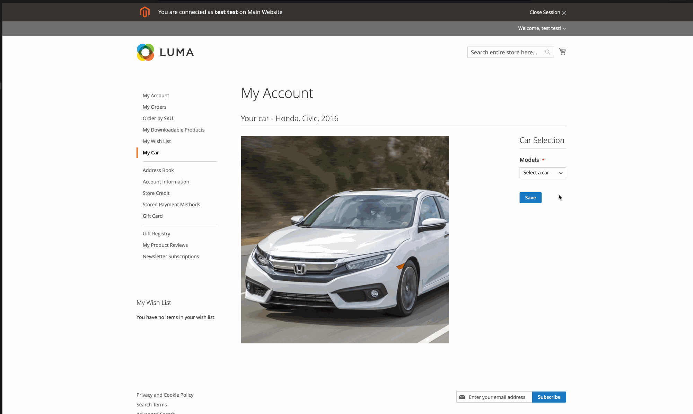

Demo_CarProfile
A Magento 2 / Adobe Commerce module that interacts with a Swagger API using the Laminas framework.
This site is static documentation hosted on GitHub Pages. The module runs inside a Magento 2 / Adobe Commerce instance.
Overview
Demo_CarProfile demonstrates how to consume a Swagger-described API from within a Magento module using Laminas-based HTTP client patterns. It is intended as a learning and demonstration project, and can be extended for production use.
Repo README currently describes it as: “module to interact with swagger API using Laminas framework.”
Key capabilities
- Magento 2 module scaffolding (registration, composer package)
- Laminas-based API interaction layer
- Example controllers / frontend view integration
- Demo UI and flow (see demo GIF)
Demo
The repository includes demo.gif. To display it here, copy it into docs/assets/demo.gif.

Install
Install via Composer by adding the Git repository and requiring the package.
1) Add repository to composer.json
"repositories": [
{
"type": "git",
"url": "https://github.com/4j4yk/Demo_CarProfile.git"
}
]
2) Require the module
composer require demo/module-car-profile dev-main
3) Enable and upgrade (typical Magento steps)
bin/magento module:enable Demo_CarProfile bin/magento setup:upgrade bin/magento cache:flush
registration.php.
Usage
The module includes sample controller(s) and frontend view(s). After installation, verify the module is enabled and
check the defined routes under etc/frontend/routes.xml (or similar) to find the entry URL.
Suggested verification checklist
- Confirm module is enabled:
bin/magento module:status - Inspect routes:
etc/frontend/routes.xml - Check controller entrypoint(s):
Controller/Index - Confirm layout + templates:
view/frontend - Review API client implementation:
Api/
Repository structure
Api/
API client layer for Swagger-backed services.
Controller/
Controller entrypoints for demo routes.
view/frontend
Templates, layouts, and assets.
etc/
Module configuration (routes, di, etc.).
Setup/
Data patches or setup scripts (if present).
Block/
View models / blocks for templates.
Limitations and next steps
- Add environment-based configuration for API base URL and credentials.
- Add error handling, retries, and timeouts around API calls.
- Add integration tests (MFTF / PHPUnit) for controllers and API client.
- Harden for production: caching, logging, and security review.